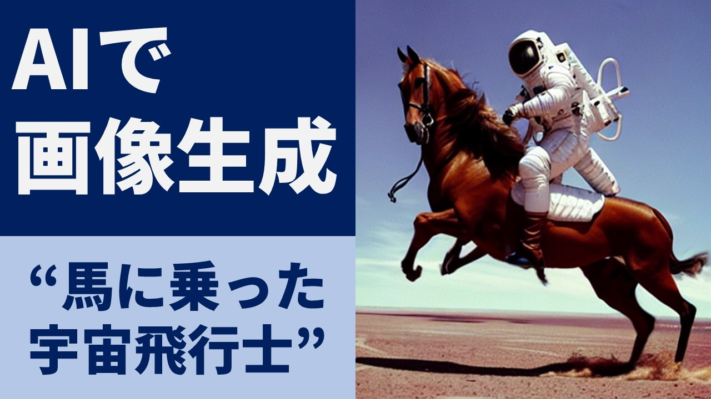
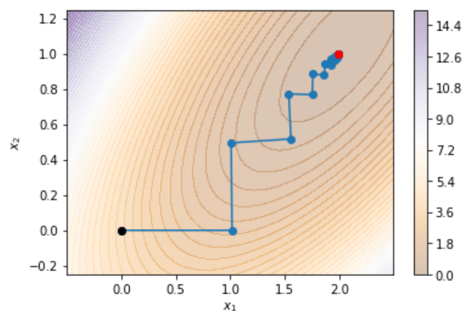
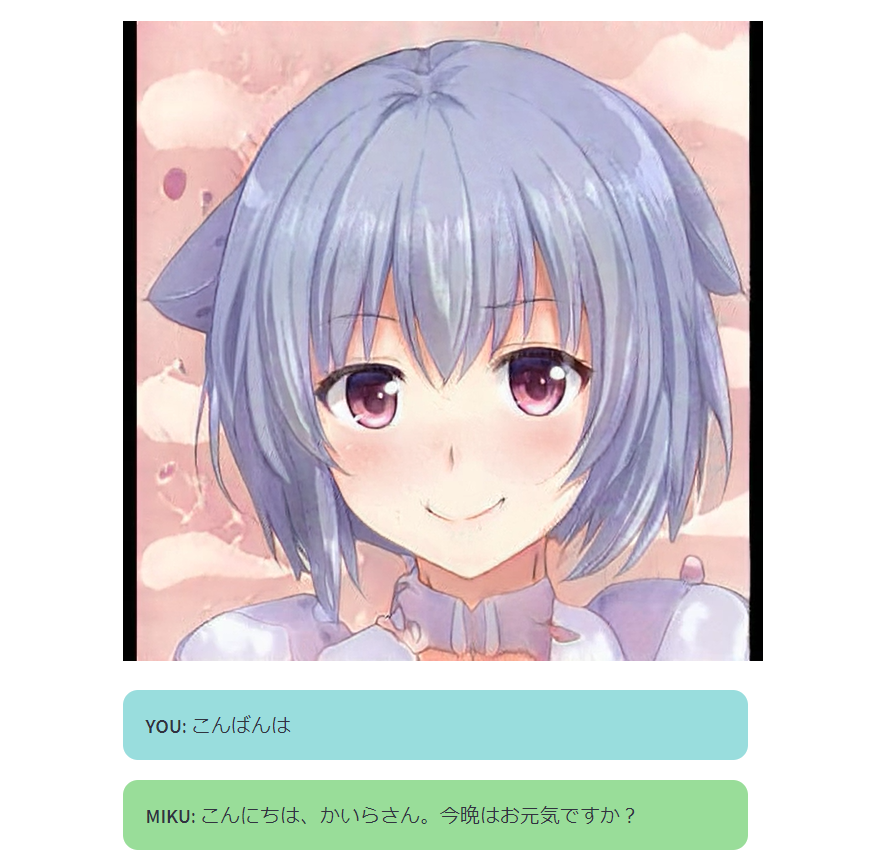

Stable Diffusion体験デモ
文章を入れると、その説明に合致するような画像を生成するAIです。 このAIは2022年8月に一般公開され、世間から注目を集めました。
京都大学11月祭
Exhibition
2022年度は体育館会場展示とオンライン展示の2種類があります。 事前予約をしていない方は体育館会場に入場できませんのでご注意ください。 体育館会場ではデモの体験会と会誌の販売を行っています。 オンライン展示(このページ)ではデモの一部と会誌のPDFを展示しています。
Journal

KaiRAでは毎年11月祭で会誌の制作・販売を行っています。 体育館会場では冊子形式で1部200円で販売しています。
PDFでは下から無料でダウンロードできます。
目次
正誤表
Demos
KaiRAメンバーが制作したデモプログラムです。いずれも無料で動かせるので、ぜひ試してみてください！

文章を入れると、その説明に合致するような画像を生成するAIです。 このAIは2022年8月に一般公開され、世間から注目を集めました。

夏休み中に開催した「しっかり学ぶ数理最適化」勉強会に関する実装です。 制約なし最適化(最急降下法、ニュートン法、準ニュートン法)、制約付き最適化(単体法)、最大流問題(増加路法)といった手法の可視化を実装しています。

Contact
デモプログラムに関するお問い合わせやKaiRAの活動に関するお問い合わせはこちらのGoogleフォームからご連絡ください。